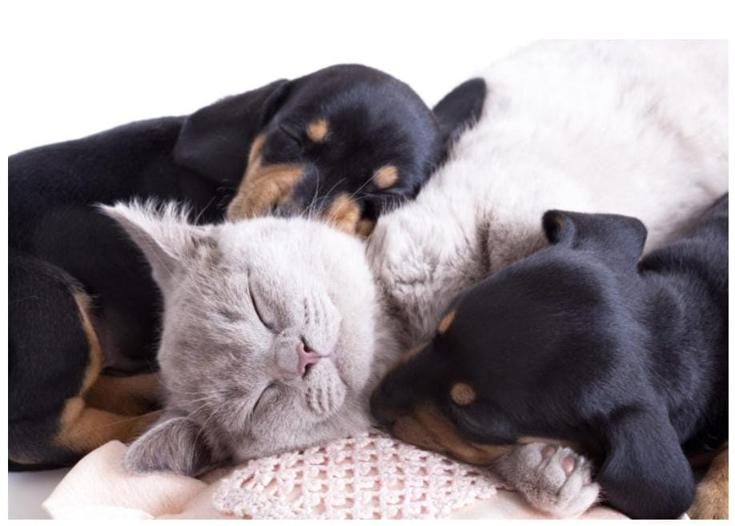
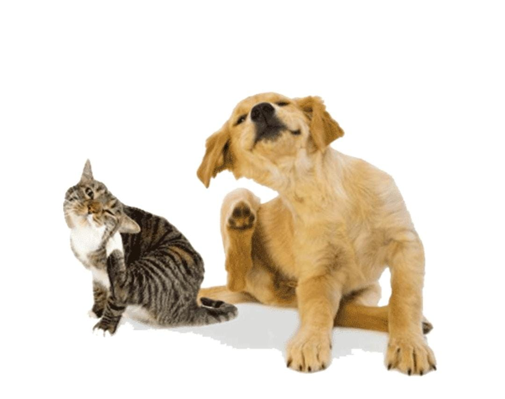
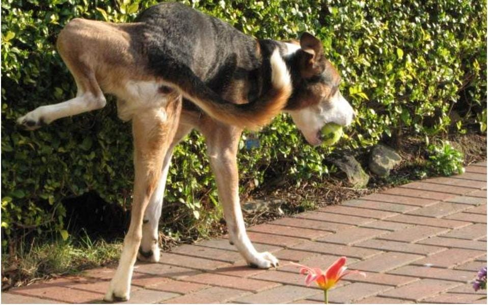
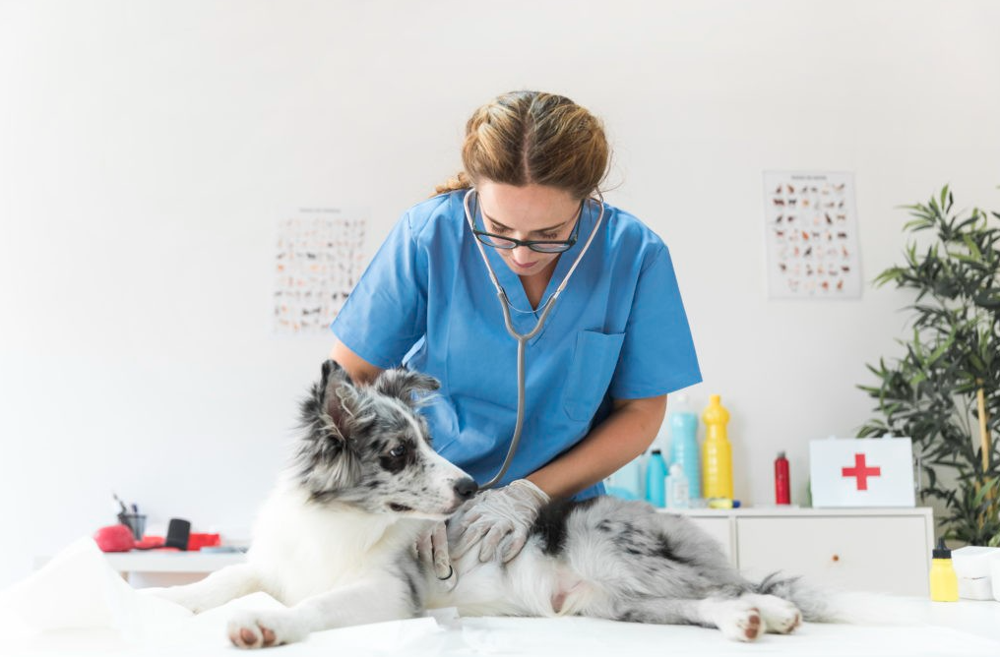

¿Cuándo empezar a administrar PawCalm en perros?
Como creadores de esta innovación para tu mascota, recomendamos que se
empiece a administrar primero bajo el criterio de un Médico
Veterinario en los siguientes casos:
-
Cuando se producen 2 crisis convulsivas en un periodo de 6 meses.
-
Si hay signos postictales (signos que siguen a la crisis convulsiva)
severos, como agresividad o ceguera. También cuando estos signos
postictales tienen una duración igual o superior a 24 horas.
-
Cuando se produzcan crisis convulsivas seguidas, lo que comúnmente
se conoce como “crisis en racimos”. Se debe considerar este criterio
aunque las crisis estén separadas por 2-3 horas entre sí.
-
Cuando se acortan los periodos interictales, es decir, los periodos
entre una crisis convulsiva y otra.
¿Como trabaja PawCalm en tu mascota?

Mecanismo de acción:
PawCalm tiene un efecto depresor del sistema nervioso central que es
dependiente de la dosis. Actúa uniéndose al receptor GABA facilitando
la neurotransmision inhibidora. El canal de GABA es un canal para el
cloruro que tiene cinco células en su entrada. Cuando los PawCalm se
fijan al canal de GABA ocasionan la apertura prolongada del canal, lo
que permite el paso de iones cloruro en las células en el cerebro,
aumentando la carga negativa y alterando el voltaje en las neuronas.
Este cambio en el voltaje hace a las neuronas resistentes a los
impulsos nerviosos ocasionando su depresión. Nuestro PawCalm es un
ácido débil que se absorbe y distribuye rápidamente a todos los
tejidos y fluidos ocasionando altas concentraciones en el cerebro, el
hígado y los riñones. Ayudando a tu mascota a estabilizarse y estar
siempre tranquilo, ademas de que
sera un delicioso snack que tu mascota podra disfrutar.
Dosificación:
El Fenobarbital debe administrarse lejos de las comidas. La
dosificación aquí sugerida es orientativa y la que genera respuesta en
la mayoría de los casos. Sin embargo, hay una gran variación de la
respuesta individual. Podrán administrarse dosis superiores a las
sugeridas, siempre teniendo en cuenta el criterio del Médico
Veterinario y se debe monitorear la aparición de efectos colaterales
indeseables.
Luego de un tiempo de tratamiento puede ser necesario elevar la dosis
o la frecuencia por el efecto de inducción enzimatica.
- Gatos: 2.5 mg por kg cada 12 horas
- Perros: 2.5 mg por kg cada 12 horas
El PawCalm puede combinarse con otras drogas antiepilépticas. Luego
de un tratamiento de 6 meses en los que no se han presentado
convulsiones, se podrá disminuir la dosis. Esto deberá hacerse
progresivamente a ritmo lento, para evitar la aparición del
status epilépticus.
Indicaciones:
Epilepsia primaria o idiopática, epilepsia secundaria, convulsiones
focalizadas o generalizadas.
-
Trastornos del comportamiento: hiperexcitabilidad, agresión
afectiva, lamido excesivo, actitud de cazar moscas inexistentes,
automutilación, animales que corren en círculo intentando morderse
la cola, hipersexualidad, comportamiento destructivo.
-
Tranquilización: En aquellos animales nerviosos o irritables que
requieren sujeción química y no deben recibir promacínicos, ya que
éstos están totalmente contraindicados en animales que presentan
convulsiones. En animales con intenso prurito disminuye la sensación
de picazón y ayuda a controlar el rascado y automutilación excesivo
que produce daño mecánico en la piel.

Contraindicaciones:
No se recomienda el uso en hembras gestantes y en lactancia
Efectos_colaterales: Puede presentarse en algunos pacientes: poliuria,
polifagia, polidipsia, sedación y en casos severos, debilidad del tren
posterior y ataxia.

En caso de sufrir una crisis severa, en este artículo te explicamos
Cómo actuar ante un ataque epiléptico en perros
Click
Aqui
¿que hacer en caso de sobredosis de PawCalm en perros y gatos?
Sobredosis de PawCalm en perros y gatos La sobredosis por PawCalm en
perros y gatos se suele producir como consecuencia de una ingestión
accidental del fármaco. Se trata de una intoxicación grave en la que
se pueden producir los siguientes síntomas:
Depresión del sistema nervioso central, pudiendo variar desde
somnolencia hasta estado de coma. Problemas respiratorios. Problemas
cardiovasculares, hipotensión y shock anafiláctico, que pueden
conducir al fallo renal y muerte del animal. Dada la gravedad de la
sobredosis por fenobarbital, es fundamental que tan pronto como
detectes o sospeches la posible intoxicación, acudas de urgencia a un
centro veterinario para evitar la absorción del fármaco y para
proporcionar soporte respiratorio y cardiovascular
cuando sea necesario. Insuficiencia hepática. Anemia. Trastornos
renales o cardiovasculares graves. Alergia al principio activo, a
cualquier otro barbitúrico o a algún excipiente del fármaco.
